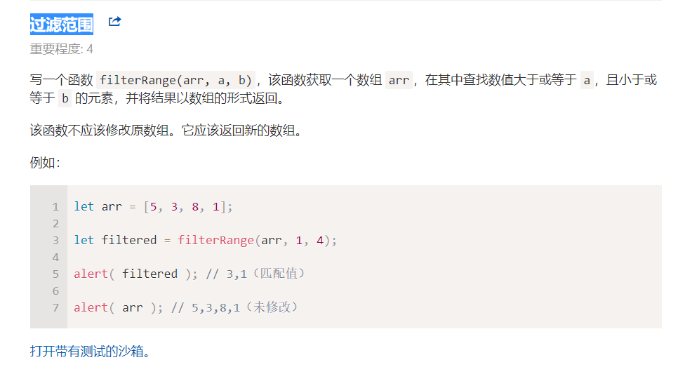

将 border-left-width 转换成 borderLeftWidth
过滤范围

注意区分不同方法的使用场景
映射到 names
prac05:按年龄对用户排序: 编写函数 sortByAge(users) 获得对象数组的 age 属性，并根据 age 对这些对象数组进行排序。 原解思路：写循环，然后进行冒泡排序，双重循环 秒杀解： arr.sort((a,b)=>a.age-b.age);